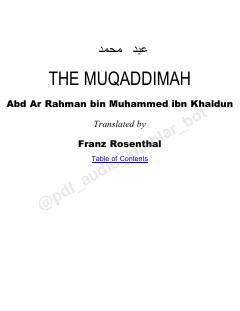

TMSivilizatsiya va jamiyat taraqqiyoti haqidagi buyuk tarixiy va falsafiy asar.
Ibn Xaldunning ushbu fundamental asari insoniyat sivilizatsiyasi, davlatlar va jamiyatlarning rivojlanish qonuniyatlarini tahlil qiladi. Muallif tarixiy voqealarni tushunishda ijtimoiy-iqtisodiy omillar va madaniy sharoitlarning o'rnini ilmiy asoslab beradi.